Descubre El Salvador
Playas, volcanes y pueblos en el video oficial de turismo del país.
El Salvador Marca País · YouTubeImágenes que capturan la belleza natural, cultural e histórica de El Salvador
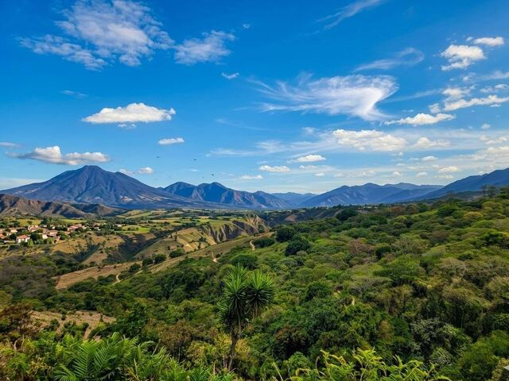
Parque Nacional El Imposible
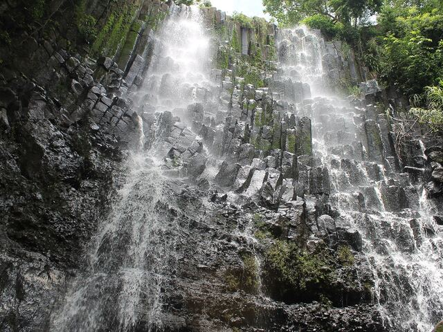
Cascada Los Tercios, Suchitoto
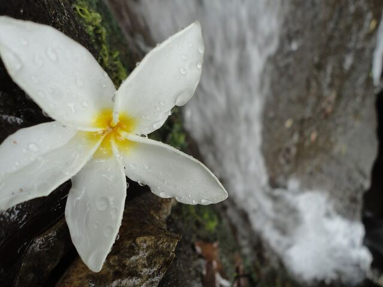
Flora de El Imposible
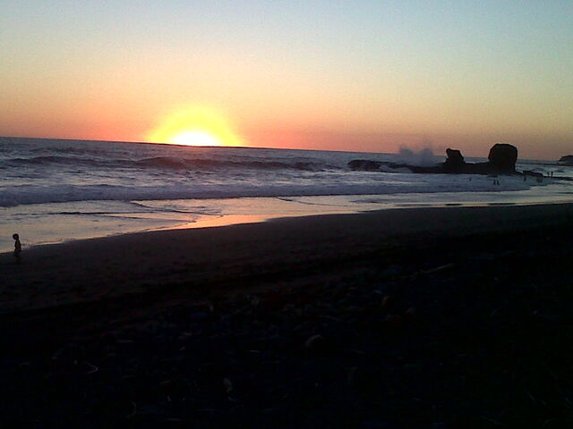
Paraíso del surf con olas perfectas
Costa del Sol
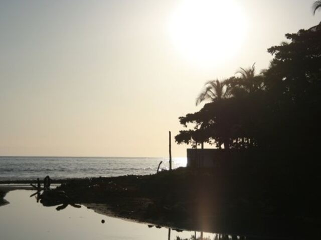
El Tunco
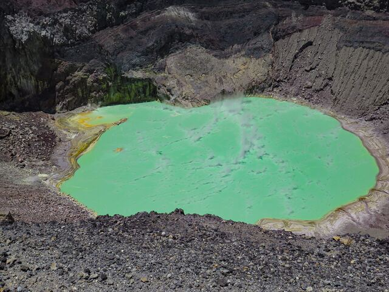
Laguna del cráter
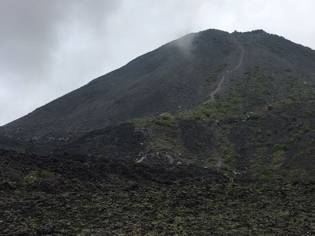
El joven gigante de forma perfecta
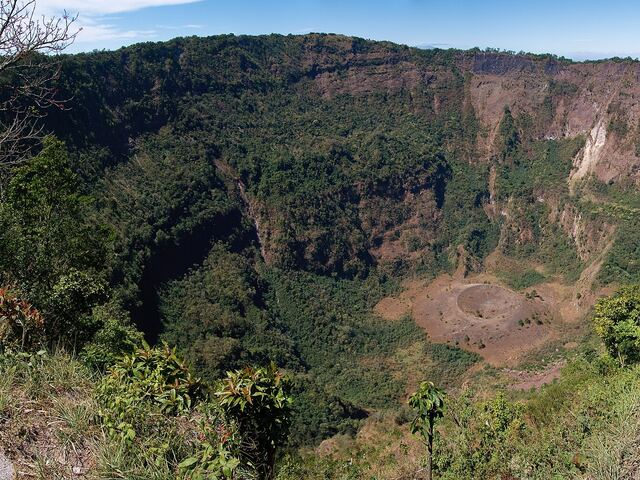
El Boquerón
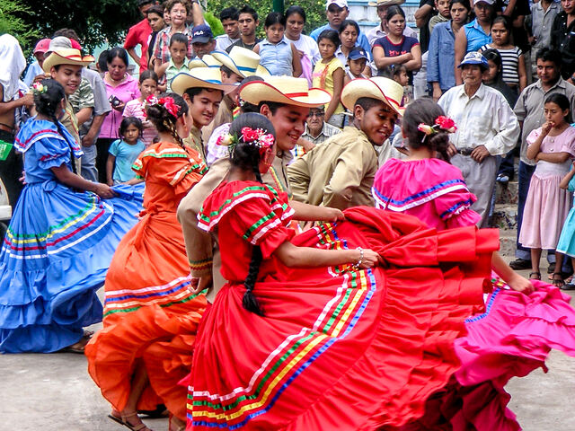
Tradiciones que perduran en el tiempo
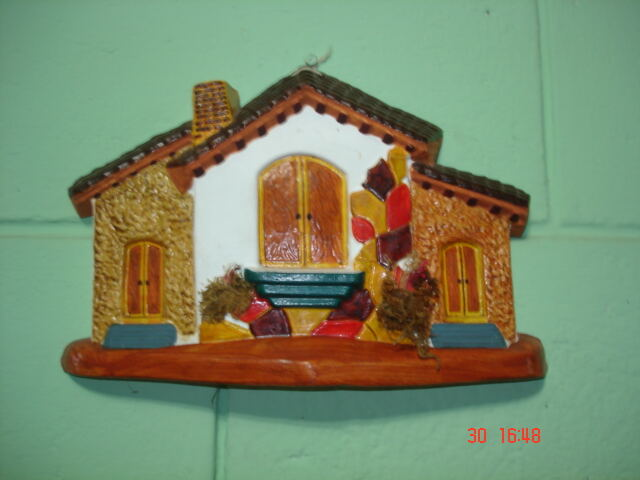
La Palma, Chalatenango
Ritmos que conmueven el alma
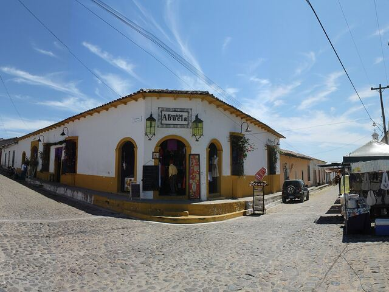
Arquitectura preservada del siglo XVIII
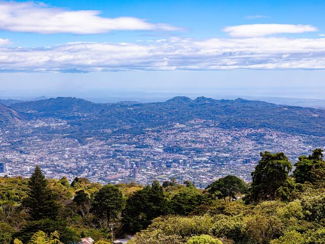
Capital vibrante y cosmopolita
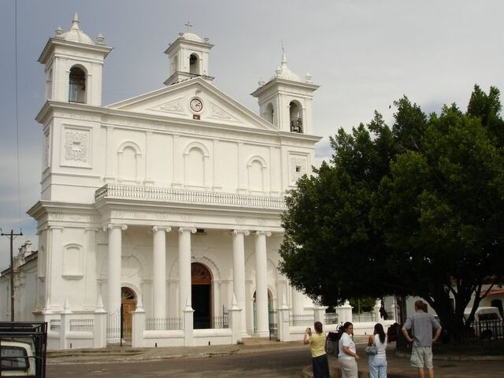
Catedral de Suchitoto
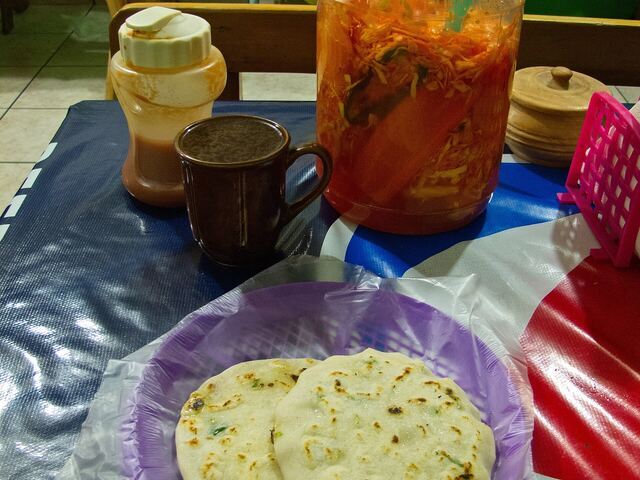
El plato nacional por excelencia
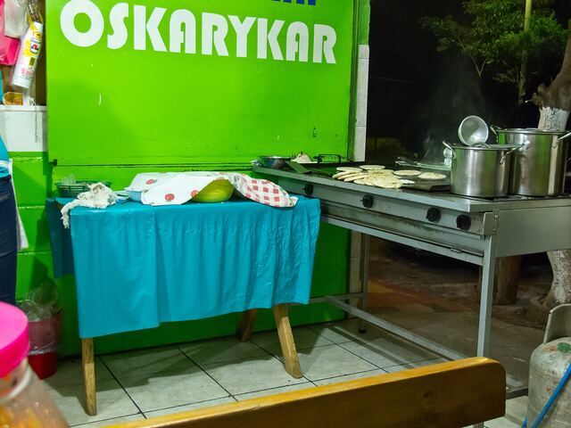
Sabores auténticos salvadoreños
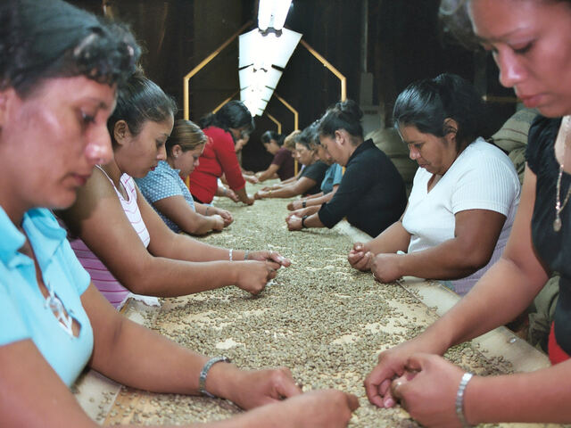
Granos de calidad mundial
¿Visitaste El Salvador? ¡Comparte tus mejores momentos con nosotros!
Formatos JPG, JPEG, PNG o WEBP, hasta 5 MB por foto y 12 fotos a la vez.
Las fotos se agregan solo en tu navegador durante esta visita: no se suben a ningún servidor, no las ven otros visitantes y desaparecen al recargar o cerrar la página.
Videos reales de El Salvador, tal como los publicaron sus autores. Toca uno para verlo.
Playas, volcanes y pueblos en el video oficial de turismo del país.
El Salvador Marca País · YouTubeVuelo en dron sobre el lago de cráter que cambia de color una vez al año.
Alvaro Mayorga: Salvadorean Traveler · YouTubeLos seis pueblos de la ruta: murales, café, artesanías y miradores.
La Prensa Gráfica · YouTubeRecorrido por la aldea maya sepultada por cenizas, Patrimonio de la Humanidad.
Telemadrid · YouTubeOlas, roca y comunidad surfista en la costa de La Libertad.
Surfing Republica · YouTubeLa historia del plato nacional, del comal a la mesa.
Canal 12 El Salvador · YouTube